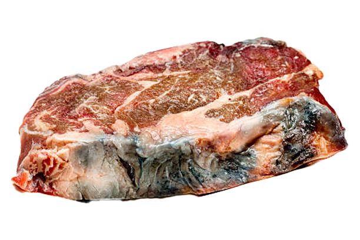

Back

When any media is developed, it is built with the implicit bias and ideas of the creator.
The content of your meat can be sourced from anywhere, even dangerous places.
Where is your meat sourced from?